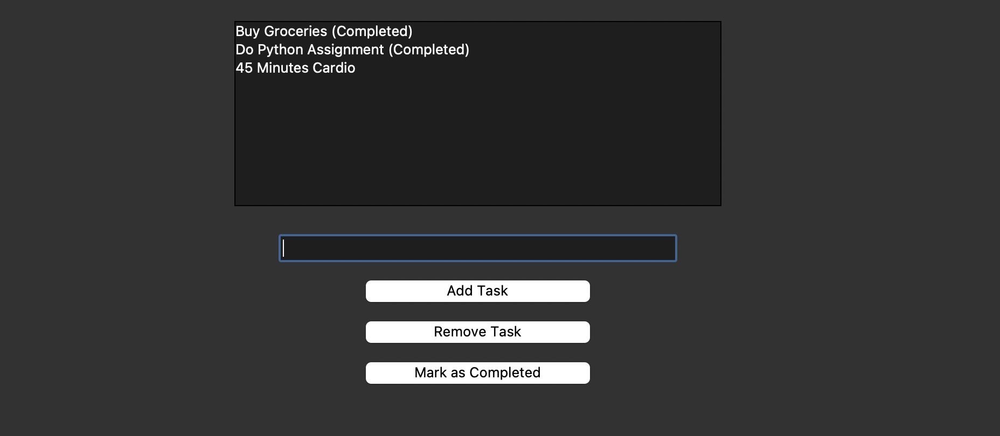
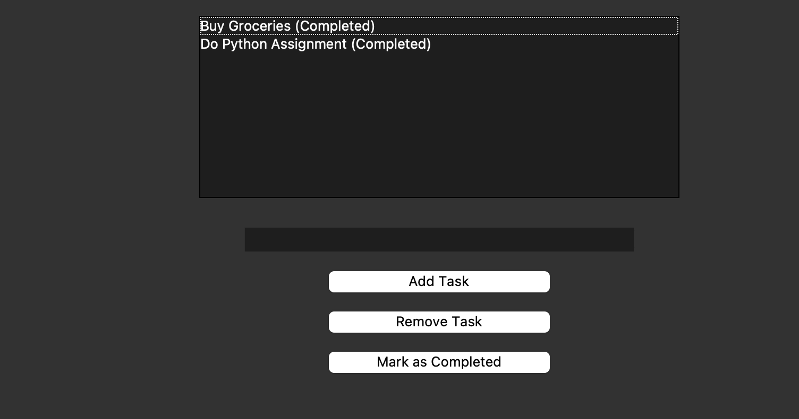

Welcome to the To-Do List Application. This Python-based app lets you manage your daily tasks efficiently. You can add tasks, mark them as completed, and remove them once they're done. The app uses Tkinter to provide a graphical user interface (GUI).
git clone https://github.com/RachitTyagi17/To_Do_List.gitcd To_Do_Listpython todo.pyHere are some screenshots of the application:
 The source code for this project is available on GitHub. Click here to visit the repository.